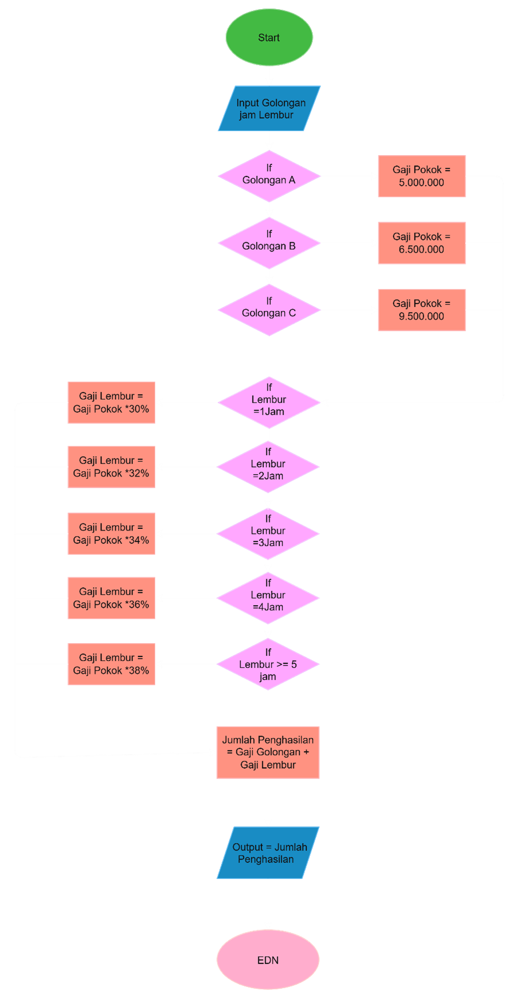

Analisis Flowchart, Pseudocode, dan Simulasi Perhitungan Penghasilan Karyawan
I. Diagram Alir (Flowchart)

II. Simulasi Perhitungan Penghasilan
Rincian Hasil Akhir
Golongan Karyawan
-
Gaji Pokok
Rp 0
Durasi Lembur
-
Persentase Lembur
0%
Nominal Gaji Lembur
Rp 0
Total Penghasilan
Rp 0
III. Kode Semu (Pseudocode)
ALGORITMA HitungGajiKaryawan
DEKLARASI
golongan : string
jamLembur : integer
gajiPokok, persentase : real
gajiLembur, totalPenghasilan : real
DESKRIPSI
INPUT(golongan)
INPUT(jamLembur)
IF golongan = "A" THEN
gajiPokok = 5000000
ELSE IF golongan = "B" THEN
gajiPokok = 6500000
ELSE IF golongan = "C" THEN
gajiPokok = 9500000
ELSE
OUTPUT("Golongan tidak valid")
STOP
END IF
IF jamLembur < 0 THEN
OUTPUT("Jumlah jam lembur tidak valid")
STOP
ELSE IF jamLembur = 0 THEN
persentase = 0.00
ELSE IF jamLembur = 1 THEN
persentase = 0.30
ELSE IF jamLembur = 2 THEN
persentase = 0.32
ELSE IF jamLembur = 3 THEN
persentase = 0.34
ELSE IF jamLembur = 4 THEN
persentase = 0.36
ELSE
persentase = 0.38
END IF
gajiLembur = gajiPokok * persentase
totalPenghasilan = gajiPokok + gajiLembur
OUTPUT("Gaji Pokok = ", gajiPokok)
OUTPUT("Gaji Lembur = ", gajiLembur)
OUTPUT("Total Penghasilan = ", totalPenghasilan)
STOP
IV. Rangkuman Materi Akademis
1. Algoritma dan Pemrograman Komputer
Algoritma adalah urutan langkah logis terstruktur untuk menyelesaikan masalah[cite: 1, 2]. Pemrograman adalah proses penerjemahan algoritma ke bahasa komputer[cite: 1, 2].
Daftar Pustaka Referensi:
Cormen, T. H., et al. (2022). Introduction to Algorithms. MIT Press[cite: 1].
Sedgewick, R., & Wayne, K. (2011). Algorithms. Addison-Wesley[cite: 1].
Munir, R. (2016). Algoritma dan Pemrograman. Informatika Bandung[cite: 1].
Schildt, H. (2018). Java: The Complete Reference. McGraw-Hill[cite: 1].
Pressman, R. S. (2019). Software Engineering. McGraw-Hill[cite: 1].
2. Sejarah dan Perkembangan Bahasa Pemrograman Java
Java dikembangkan James Gosling di Sun Microsystems tahun 1991 (awal bernama Oak) dengan konsep *Write Once, Run Anywhere* (WORA). Diakuisisi Oracle Corporation tahun 2010.
Contoh Aplikasi Berbasis Java:
Sistem Operasi Android: Sebagian besar aplikasi Android menggunakan JVM dan Java.
Minecraft (Java Edition): Game populer yang dibangun sepenuhnya dengan Java.